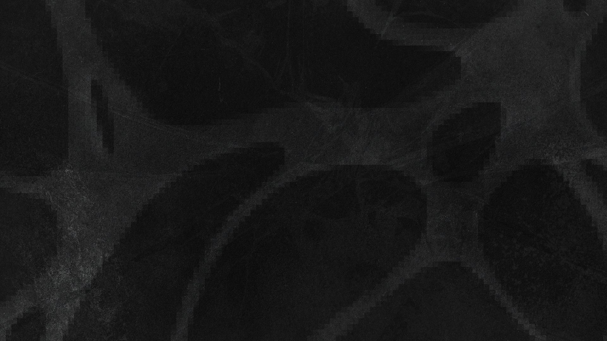
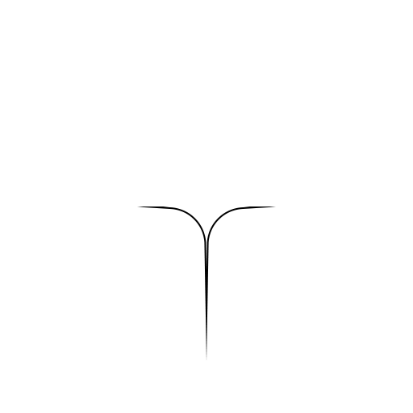
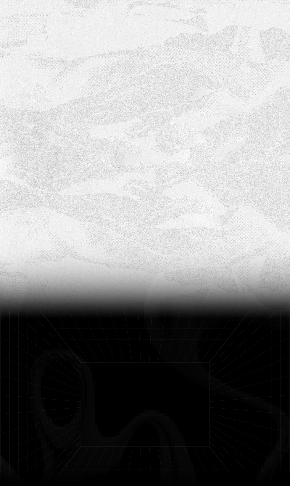

Hey, guys and gals.
This is Kirill, or more canonically Kiritos/Pryanik. And this is the
portfolio website for my project called 22. I've been working in this
field for over three years now, and I'm not planning on stopping. My
project is aimed at developing the underground scene of music covers,
car posters, and other visual services for those looking for something
unusual and unique. Feel free to make yourself at home on this page
and check out my work, listen to music, or order something. I am
always happy to chat with anyone who writes to me.
P.S. Don't
forget to smile.